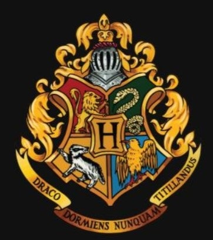

Hogwarts University 
There are a variety of classes taught at Hogwarts University of Witchcraft and Wizardry. These include both the core curriculum and the electives, available from third year forward. In the fifth year, students take the Ordinary Wizarding Level (O.W.L.) exams to determine whether they can achieve a score high enough to continue to N.E.W.T.-level (Nastily Exhausting Wizarding Test) for the class in the remaining two years. Some classes, including the core classes, may be dropped in sixth year. Specialised classes such as Alchemy become available in sixth year provided there is sufficient demand.
Even though students cannot apply for Time-Turners to take more classes than are able to fit in the timetables, a student's head of college may suggest a Time-Turner to an individual on very rare occasions. All students do, however, have a choice to drop a course if they become a burden (aside from the essential classes).
All first-years at Hogwarts must take seven core subjects: Transfiguration, Charms, Potions, History of Magic, Defence Against the Dark Arts, Astronomy and Herbology. Flying lessons (on broomsticks) are also compulsory. Flying is the only one of these that is dropped upon entry into second year.
At the end of their second year at Hogwarts, students are required to choose a minimum of two additional subjects from the following list: Arithmancy, Muggle Studies, Divination, Study of Ancient Runes and Care of Magical Creatures. Students cannot elect to drop any of the core subjects at this time, but they may choose to drop an elective if it becomes a burden.
During sixth year, students advance to N.E.W.T.-level classes, based on the individuals O.W.L. scores for a certain subject. Course work during this year is much more advanced than it was previously. The majority of students' time is spent studying and trying to cope with the vast amounts of homework they are being given. Students in the sixth year may also elect to take part in Apparition lessons for a fee of twelve Galleons.
The seventh year is the final year of magical education and at the end of the year, students take the exam for their N.E.W.T. subjects that were chosen in sixth year and must carry through to the seventh.
Very specialised subjects such as Alchemy are offered in the final two years, but will only be provided if there is sufficient demand. It's unknown whether the student will need any grades from another subject to take the subjects, or whether it's open to anyone to try. There may be a N.E.W.T. exam for these subjects too.
Certain subjects may be abolished for certain reasons. Albus Dumbledore was originally planning to scrapping Divination altogether due to its inaccuracy to most, but he kept the subject as a pretence to protect Sybill Trelawney from the Death Eaters. During the conquered Ministry's regime, Defence Against the Dark Arts was cancelled and replaced with outright Dark Arts, conforming with Lord Voldemort's reign of darkness. Upon the defeat of Voldemort, the Dark Arts class was abolished and the regular Defence class was restored.
Astronomy is the only field of study at Hogwarts that has a direct equivalent in the Muggle world. Astronomy classes take place in the Astronomy Tower, the tallest tower in Hogwarts, and are taught by Professor Aurora Sinistra. Lessons involve observations of the night skies with telescopes. Lessons are held every week at midnight, and first years have lessons on Wednesday. Known student homework activities include learning the names of stars, constellations and planets, and their location, movements, and environments.
Charms is the type of spells concerned with giving an object new and unexpected properties, and hence this class mainly consists on learning those sorts of spells. Charms classes are described as notoriously noisy and chaotic, as the lessons are largely practical. Many of the exposition sequences in the books are set in Charms classes, which are on the second floor of Hogwarts.
Defence Against the Dark Arts, commonly shortened to D.A.D.A., is the class that teaches students defensive techniques to defend against the Dark Arts, and to be protected from Dark creatures.
The subject has an extraordinarily high turnover of staff members — throughout Harry Potter's time at Hogwarts, no Defence Against the Dark Arts teacher has remained at Hogwarts for more than one school year. These included Quirinus Quirrell, Gilderoy Lockhart, Remus Lupin, Bartemius Crouch Jr impersonating Alastor "Mad-Eye" Moody, Dolores Umbridge, Severus Snape, and Amycus Carrow. Hagrid suggested that "They're startin' ter think the job's jinxed. No one's lasted long for a while now." Dumbledore suggested that Voldemort cursed the position because his application for it was rejected. The position had also been coveted by Snape, but he was denied the position as well. Snape was finally appointed D.A.D.A. professor in 1996. After the end of the Second Wizarding War, the jinx on the position was lifted. Harry Potter would occasionally come to the class to give lectures on the subject.
Flying is the class that teaches the use of broomsticks made for the use of flying and is taught only to Hogwarts first years by Rolanda Hooch. The subject is the only one that requires physicality.
Herbology is the study of magical plants and how to take care of, utilise and combat them. There are at least three greenhouses, holding a variety of magical plants of varying degrees of lethality. Herbology is also the subject Neville Longbottom excels in. He later replaces Professor Sprout as the Herbology teacher.
History of Magic is the study of magical history. Cuthbert Binns' lessons are depicted as some of the most boring at Hogwarts. They are only lectures, given without pause, about significant events in wizarding history. Topics have included Goblin Rebellions, Giant wars, and the origins of wizarding secrecy. This is the only class at Hogwarts that is taught by a ghost, as the professor never noticed he had died and simply continued teaching as if nothing had changed.
Potions is described as the art of creating mixtures with magical effects. It requires the correct mixing and stirring of ingredients at the right times and temperatures. Snape's lessons are depicted as unhappy, oppressing times set in a gloomy dungeon in the basement of the castle, whilst Horace Slughorn's, who replaces Severus Snape as Potions Master, is shown as more cheerful and even fun at times.
Transfiguration is the art of changing the form or appearance of an object, and hence this is what this class teaches. Transfiguration is a theory-based subject, including topics such as "Switching Spells" (altering only a part of some object, such as giving a human rabbit's ears); Vanishing Spells (causing an object to completely disappear); and Conjuring Spells (creating objects out of thin air). It is possible to change inanimate objects into animate ones and vice versa — Minerva McGonagall, the class's teacher, transfigures her desk into a pig.
Arithmancy is a branch of magic concerned with the magical properties of numbers. It is a favourite subject of Hermione Granger. Arithmancy is reportedly difficult, as it requires memorising or working with many charts. It is also an elective course, that can be taken by students third year and above. The subject is taught by Professor Septima Vector. It is separated into normal Arithmancy and Advanced Arithmancy Studies
Care of Magical Creatures is the class which instructs students on how to care for magical beasts. Classes are held outside the castle. In Harry's first two years, the class is taken by Professor Silvanus Kettleburn who then retires "in order to enjoy more time with his remaining limbs". Dumbledore then recruits the gamekeeper Rubeus Hagrid to accept a teaching position along with his gamekeeping duties. Although Hagrid is obviously very experienced and knowledgeable, he consistently misjudges the risk that the animals he uses in his lessons pose to his students, which sometimes results in chaos. When Hagrid is absent, his lessons are taken over by Professor Grubbly-Plank, a witch and acquaintance of Dumbledore's.
Divination is the art of predicting the future. Various methods are described, including tea leaves, Fire-omens, Crystal balls, Palmistry, Cartomancy (including the reading of conventional playing cards and the tarot), astrology, and Dream interpretations. Divination is described by Professor McGonagall as "one of the most imprecise branches of magic". Supporters of the subject claim that it is an inexact science that requires innate gifts like the "Inner Eye". Those opposed claim that the subject is irrelevant and fraudulent. Harry is first taught Divination by Professor Trelawney, and then later by Firenze after Trelawney is sacked by Dolores Umbridge in Harry's fifth year. In the sixth (and presumably seventh) year, Firenze and Professor Trelawney teach Divination.
Apparition is the magical form of teleportation in the wizarding world. Lessons are optional to those in the sixth and seventh years. In the wizarding world, performing Apparition requires a licence and may only be legally performed by people over seventeen years of age. The described reason for the restriction is that Apparition is dangerous if done improperly: insufficient concentration may lead to body parts being left behind in an unfortunate side-effect known as splinching. Although, as Hermione points out innumerable times throughout the series, magical enchantments on Hogwarts Castle and grounds prevent Apparition and Disapparition inside the castle, these protections are temporarily relaxed within the Great Hall for short periods to permit students to practise Apparition. Wilkie Twycross, a Ministry of Magic Apparition Instructor, offers lessons in Apparition to sixth-years.
Art is a class where students paint, draw, and otherwise, depict artistic things (presumably controlling the paint and pencils with either a spell that repeats the same thing over and over or a spell that stands upright over the paper or canvas and draws in the direction that the wand moves).
It is assumed that students learn about ghouls like poltergeists, vampires, Veela, etc. and how to defend themselves from these creatures.
A subject taught to at least first years. It is taught in Class 67 on the fourth floor of Hogwarts Castle. It presumably covers magic from a purely theoretical view, and Magical Theory by Adalbert Waffling may be a required textbook.